Axe
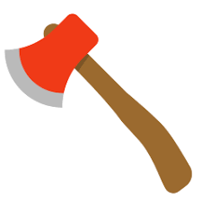A cutting tool with a heavy blade and a long handle, used for chopping wood.
Boots
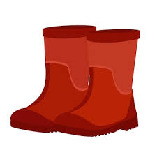Sturdy footwear that protects the feet and ankles, ideal for garden work.
Fence
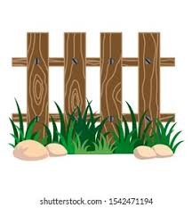A structure used to enclose an area, keep animals in or out, and provide privacy.
Fertilizer
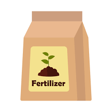A substance added to soil to supply essential nutrients to plants.
Flowerpot
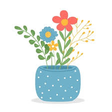A container, usually made of ceramic or plastic, used for growing plants.
Garden Bucket
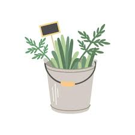A container used for carrying soil, water, or other gardening materials.
Gloves
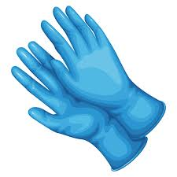Garments that cover and protect the hands during gardening work.
Grass
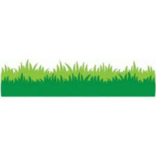Green plant that forms a dense cover over the ground, common in gardens and parks.
Grass Sickle
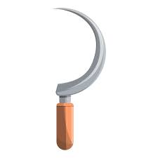Hand tool with a curved blade used for cutting grass or weeds.
Hoe
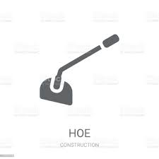Gardening tool with a flat blade used for digging and loosening soil.
Hose
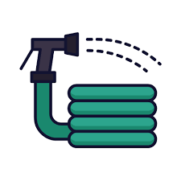Flexible tube used for conveying water, commonly used for watering plants.
Lawn Mower
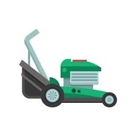Machine used to cut grass to a uniform height.
Pruners
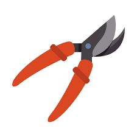Hand tools used for trimming branches and small plants.
Pruning Saw
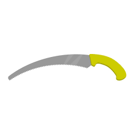Saw used for cutting thicker branches during pruning.
Rake
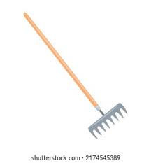Tool with tines used for gathering leaves, cut grass, and other garden debris.
Shovel
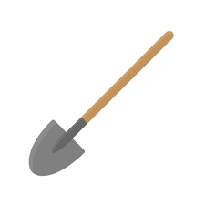Garden tool with a broad blade used for digging and moving soil.
Spade
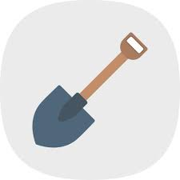Type of shovel with a flat, narrow blade, ideal for cutting and digging.
Watering Can

Container with a spout and a handle, used for watering plants by hand.
To make your gardening experience more enjoyable, it is essential to have the right tools. Gardening tools are necessary to help you loosen soil, plant flowers, trim hedges, and maintain your garden’s health.